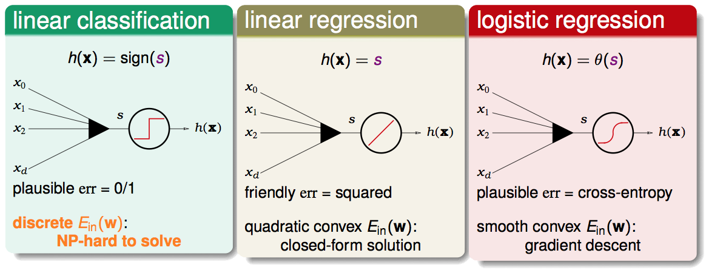
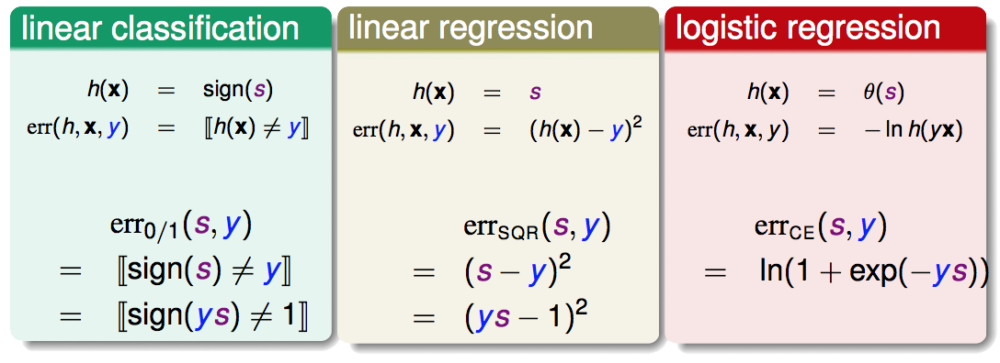
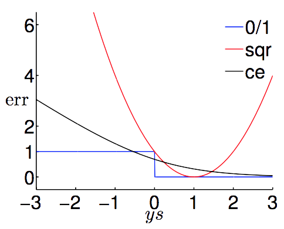
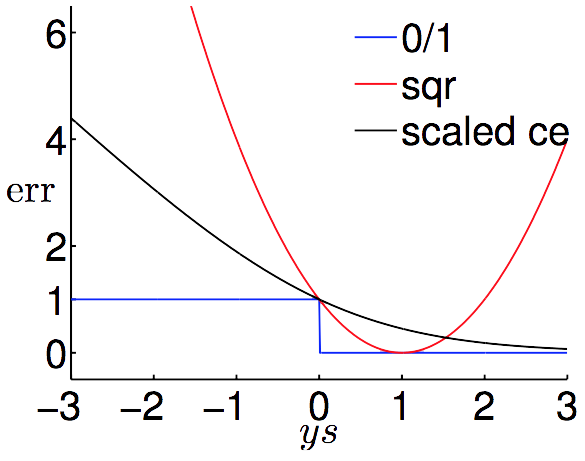
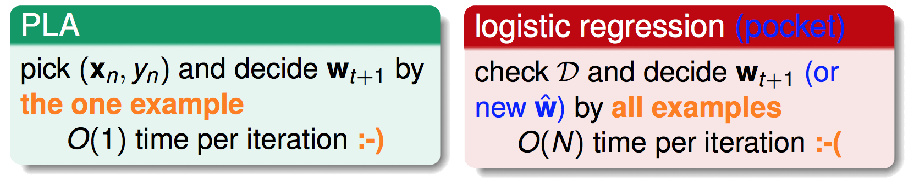
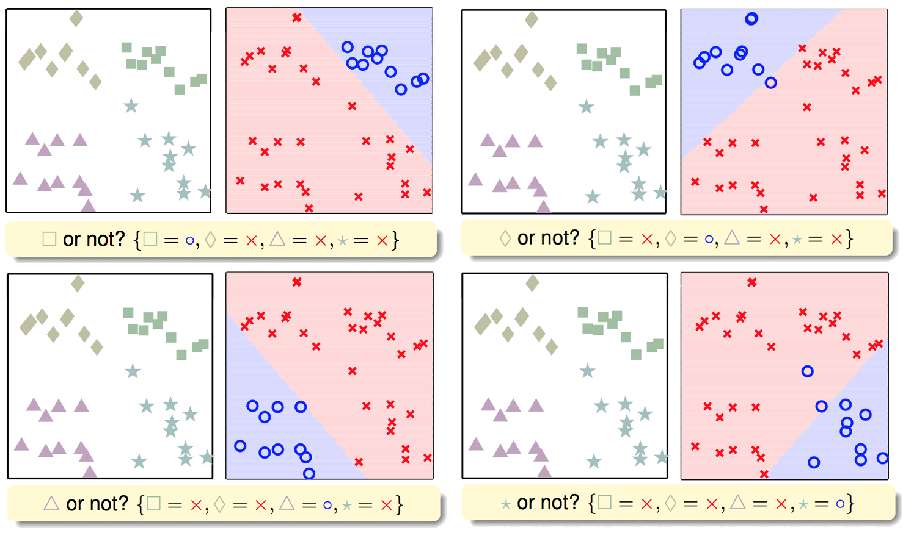
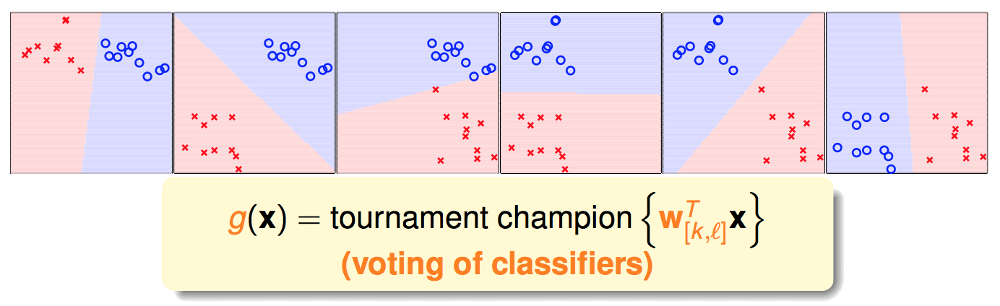

前面的笔记介绍了三种线性模型，PLA、Linear Regression与Logistic Regression。之所以称他们是线性模型，是因为这三种分类模型的方程中，都含有一个相同的部分，该部分是各个特征的一个线性组合，也可以称这个部分叫做线性评分方程:
严谨一点来说，PLA并不是一种“模型”，PLA (Perceptron Learning Algorithm) 是一种“算法”，用来寻找在“线性可分”的情况下，能够把两个类别完全区分开来的一条直线，所以我们简单的把PLA对应的那个模型就叫做Linear Classification。
下面对比下这三种模型:

Linear Regression和Logistic Regression的输出是一个实数，而不是一个Binary的值，他们能用来解分类问题吗？可以，只要定一个阈值，高于阈值的输出+1，低于阈值的输出-1就好。既然Linear Regression和Logistic Regression都可以用来解分类问题，并且在最优化上，他们都比Linear Classification简单许多，我们能否使用这两个模型取代Linear Classification呢？
三个模型的区别在于误差的衡量，误差的衡量可以说是一个模型最重要的部分，这部分内容可以参考Noise and Error。

这里是一个binary的值，要么是-1，要么是+1。注意到三个模型的error function都有一个的部分，也叫做分类正确性分数 (classification correctness score)。其中是模型对某个样本给出的分数，是该样本的真实值。
不难看出，当时，我们希望越大越好，当时，我们希望越小越好，所以总的来说，我们希望尽可能大。因此这里希望给较小的较大的cost，给较大的较小的cost即可。因此，不同模型的本质差异，就在于这个cost该怎么给。
既然这三个error function都与有关，我们可以以为横坐标，为纵坐标，把这三个函数画出来。

sqr (squre error)为Linear Regression的误差函数，ce (cross entropy)为Logistic Regression的误差函数。可以看出，在较小的时候很大，但是，在较大的时候同样很大，这点不是很理想，因为我们希望大的时候cost要小，尽管如此，至少在小的时候，也很小，因此可以拿来做error function。则是一个单调递减的函数，形态有点点像，但来的比较平缓。注意到有一部分是小于的，我们希望能成为的一个upper bound（目的一会儿会说到），只要将做一个换底的动作，即：

事实上这里做scale的动作并不会影响最优化的过程，它只是让之后的推导证明更加容易一些。
现在稍稍回忆一下我们的问题是什么:
能不能拿Linear Regression或Logistic Regression来替代Linear Classification？
为什么会想做这样的替代？Linear Classification，在分类这件事上，它做的很好，但在最优化这件事上，由于是NP-hard问题，不大好做，而Linear Regression与Logistic Regression在最优化上比较容易。因此，如果他们在分类能力上的表现能够接近Linear Classification，用他们来替代Linear Classification来处理分类的问题，就是件皆大欢喜的事。这时候就可以想想刚刚为何要把 scale 成的upper bound，目的就是为了让这几个模型的观点在某个方向上是一致的，即：
/低的时候，也低
通俗一点讲：
假设某种疾病有两种检测方法A和B。A方法检查结果为阳性时，则患病，为阴性时，则未患病。B方法的效率差一些，对于一部分患病的人，B方法不一定结果为阳性，但只要B的结果为阳性，再用A来检查，A的结果一定也为阳性。这么一来，我们就可以说，如果B方法的结果为阳性的时候，我们就没有必要使用A方法再检查一次了，它的效率是和A相同的。
再通俗一点讲：
如果使用/来衡量一个模型分类分得好不好的时候，如果他们认为分得好，那么如果使用，它也会认为分得好。
对比下在处理分类问题时，使用PLA，Linear Regression以及Logistic Regression的优缺点。
PLA:
Linear Regression:
Logistic Regression:
所以我们常常可以使用Linear Regresion跑出的作为(PLA/Pocket/Logistic Regression)的，然后再使用来跑其他模型，这样可以加快其他模型的最优化速度。同时，由于拿到的数据常常是线性不可分的，我们常常会去使用Logistic Regression而不是PLA+pocket。
我们知道PLA与Logistic Regression都是通过迭代的方式来实现最优化的，即：
For t = 0, 1, ... when stop, return last w as g
区别在于，PLA每次迭代只需要针对一个点进行错误修正，而Logistic Regression每一次迭代都需要计算每一个点对于梯度的贡献，再把他们平均起来:

这样一来，数据量大的时候，由于需要计算每一个点，Logistic Regerssion就会很慢了。上一篇有讲到Logistic Regression每次是怎样迭代的：
那么我可以不可以每次只看一个点，即不要公式中先求和再取平均数的那个部分呢？随机取一个点n，它对梯度的贡献为:
我们把它称为随机梯度，stochastic gradient。而真实的梯度，可以认为是随机抽出一个点的梯度值的期望(红色部分取平均数的动作):
因此我们可以把随机梯度当成是在真实梯度上增加一个均值为0的noise：
虽然和true gradient存在一定的误差，但是可以认为在足够多的迭代次数之后，也能达到差不多好的结果。我们把这种方法成为随机梯度下降，Stochastic Gradient Descent (SGD):
和之前说到的Gradient Descent相比，SGD的好处在于时间复杂度大幅减小(每次只随机地看一个点)，在数据量很大的时候可以很快得得到结果，当然缺点就是，如果前面说到的那个很大的话，会稍稍有点不稳定。
我们现在已经有办法使用线性分类器解决二元分类问题，但有的时候，我们需要对多个类别进行分类，即模型的输出不再是0和1两种，而会是多个不同的类别。那么如何套用二元分类的方法来解决多类别分类的问题呢？
利用二元分类器来解决多类别分类问题主要有两种策略，OVA(One vs. ALL)和OVO(One vs. One)。
先来看看OVA，假设原问题有四个类别，那么每次我把其中一个类别当成圈圈，其他所有类别当成叉叉，建立二元分类器，循环下去，最终我们会得到4个分类器。

做预测的时候，分别使用这四个分类器进行预测，预测为圈圈的那个模型所代表的类别，即为最终的输出。譬如正方形的那个分类器输出圈圈，菱形、三角形、星型这三个分类器都说是叉叉，则我们认为它是正方形。当然这里可能遇到一个问题，就是所有模型都说不是自己的时候(都输出叉叉)，怎么办？ 很简单，只要让各个分类器都输出是否为自己类别的概率值，即可，然后选择概率值最高的那个分类器所对应的类别，作为最终的输出。
在类别较多的时候，如果使用OVA方法，则又会遇到数据不平衡(unbalance)的问题，你拿一个类别作为圈圈，其他所有类别作为叉叉，那么圈圈的比例就会非常小，而叉叉的比例非常高。为了解决这个不平衡的问题，我们可以利用另外一个策略，OVO，即每次只拿两个类别的数据出来建建立分类器，如下图。

这个想法类似在打比赛，一笔新数据进来之后，分别使用这六个模型进行预测，得票数最多的那个类别，作为最终的输出。这样做的好处是，有效率，每次只拿两个类别的数据进行训练，每个模型训练数据量要少很多。但是缺点是，由于模型的数量增加了，将消耗更多的存储空间，会减慢预测的速度。